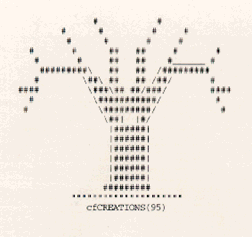

Elderhostelers Climb Trees, Too!
Celia Freese
"The Elderhostel Mindset
Elderhostelers might be seen
Climbing trees.
Alarming!
I've heard it said, quite aptly put,
in order that we keep
in touch
With Sprigs that, shape us,
Oh, so much,
To satisfy our learning...
Doesn't this sound charming!"
I am using courier 10 here to illustrate my poem

-Celia Freese
Second Grade Teacher
Daniel Boone Elementary School
Wentzville, Missouri
 Return to Main Page
Return to Main Page
June Julian jj68@nyu.edu